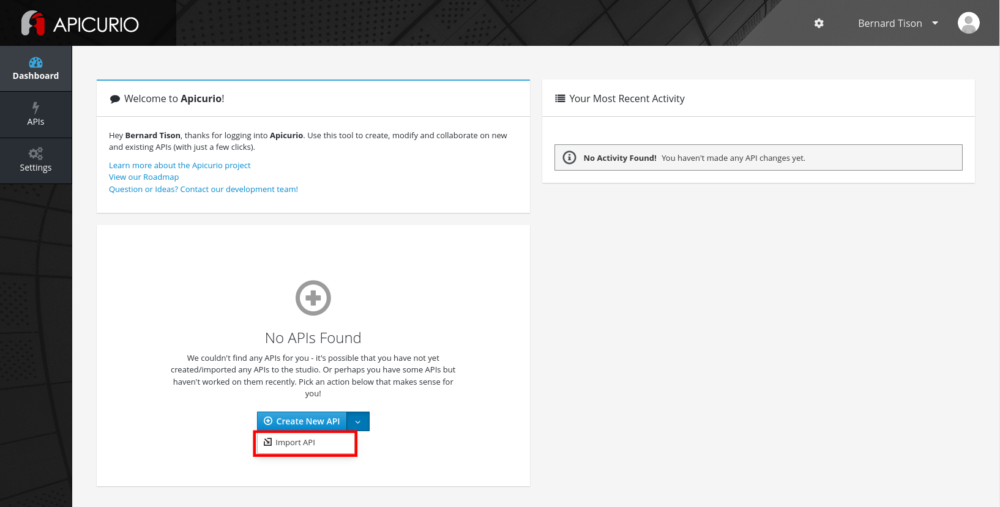
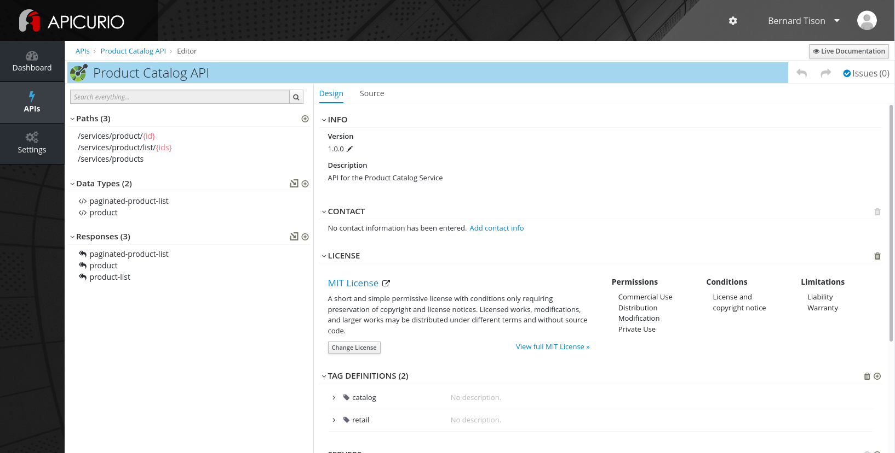
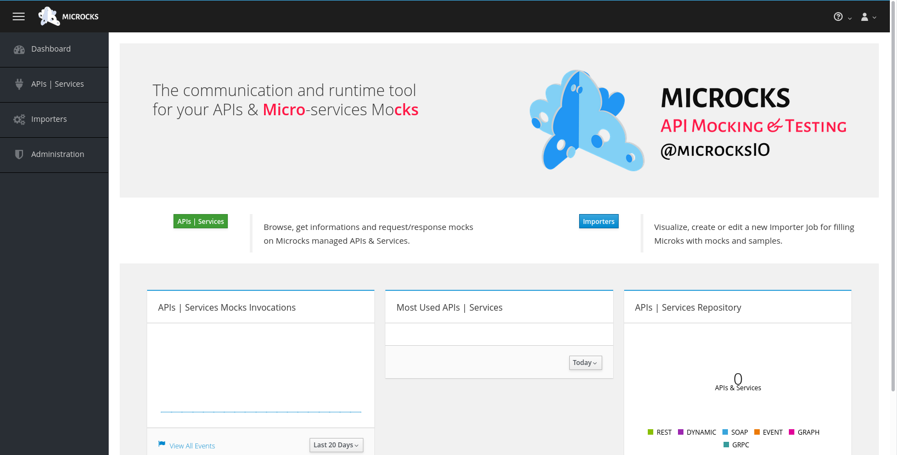
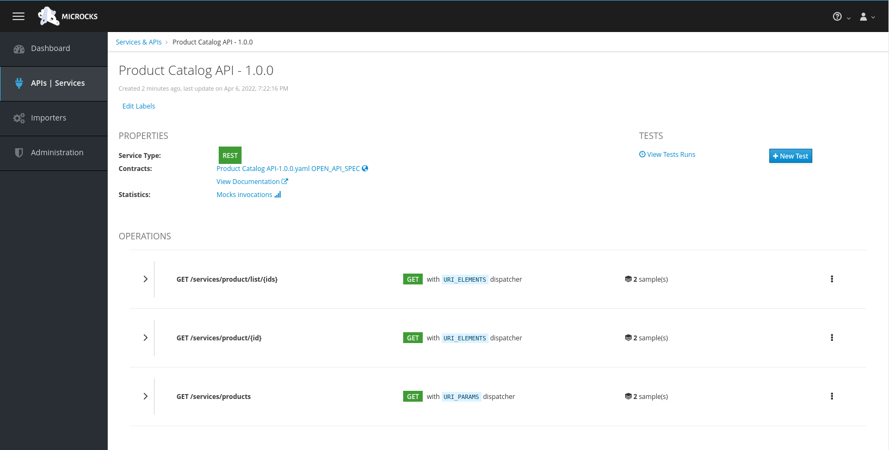
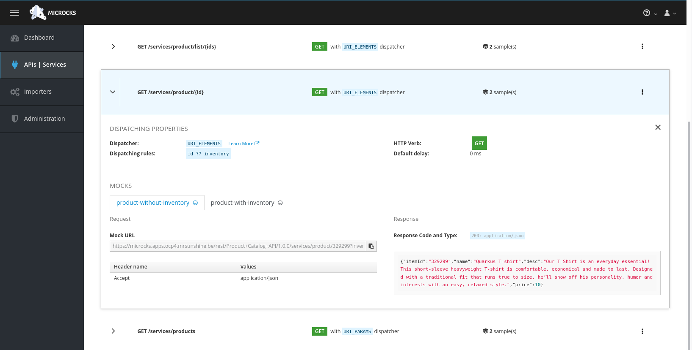

Demo / Walkthrough
Here you find a recorded video of the solution pattern, as well as a walkthrough guide through the differents aspects of the solution pattern.
Demo Walkthrough
Prerequisites:
-
Access to an OpenShift environment, preferably with
cluster-adminprivileges. -
ocOpenShift CLI -
helmHelm CLI
1. API First approach
1.1 API Design with Apicurio Studio
Apicurio Studio is an environment which allows to collaboratively work on API specifications. It can be installed on OpenShift, but for this demo we use the free hosted version of Apicurio Studio.
-
In a browser window, navigate to https://studio-auth.apicur.io.
-
Register as a new user, or log in in using your Github or Google account.
You are redirected to the dashboard page. From here you can create a new API. You can also import an existing API from e.g. GitHub. -
On the dashboard page, select Import API from the Create new API drop-down box.
 -
On the Import API page, set the Import Type to Import From Source Control. Enter
https://github.com/globex-recommendation/catalog-service-api/blob/main/openapi/openapi-spec.ymlin the Url text box. Click Import API. -
You are redirected to the
Product Catalog APIfront page. This the OpenAPI spec document which describes the API to the Catalog Service of the Globex retail application.
Click Edit API to open the API Editor. -
Navigate within the editor to inspect the different paths, data types and reusable responses that make up the API definition. You can switching between the graphical editor and the source code editor by selecting the Design ot the Source tab.
|
In a real-world scenario you would do the inverse: start with an empty API specification, and define the different elements of the spec document. You then export the spec in JSON or YAML format (by copying the contents from the source editor) to your local file system and push it to version control. |
1.2 API mocking with Microcks
API mocking allows for parallel streams of development. Developer teams that need to build applications that consume the API don’t need to wait until the implementation of the API is finished, but can develop against API mocks that return pre-canned responses.
Microcks is a web-based tool which exposes mocks based on a variety of sources, including OpenAPI spec documents. Refer to the Microcks web site for more information.
Microcks needs to be installed on your OpenShift cluster. The easiest way to do this is through the Microcks operator which is available through OperatorHub. This requires cluster admin access. If you don’t have cluster admin access, refer to the Microcks installation documentation for alternative installation methods.
-
Clone the https://github.com/globex-recommendation/catalog-service-api repository to your workstation. This repo contains the Calatog Service OpenAPI spec in the
openapifolder. -
On the OpenShift cluster, create the
microcksnamespace. -
From the OperatorHub page in the OpenShift web console, install the Microcks operator in the
microcksnamespace (The operator does not support cluster-wide installation mode). -
Deploy a
MicrocksInstallCustom Resource. The Microcks project provides a minimal Custom Resource which is sufficient for this demo.OPENSHIFT_DOMAIN=$(oc get ingresscontroller default -n openshift-ingress-operator --template='{{.status.domain}}') curl https://microcks.io/operator/minikube-minimal.yaml -s | sed "s/KUBE_APPS_URL/${OPENSHIFT_DOMAIN}/g" | oc apply -n microcks -f - -
Once the Microcks pods are running, the Microcks console can be reached at https://microcks.$OPENSHIFT_DOMAIN. Log in with
admin/microcks123 -
Microcks provides several ways to import assets for mocking, including uploading an OpenAPI spec document.
On the dashboard, click the Importers button, and on the Import Jobs page, click Upload. -
Browse to the
openapi-spec.ymlfile in theopenapifolder of the GitHub project you cloned before and click Upload to upload the document. -
On the APIs|Services page, click on the Product Catalog API link to open the service page.
 -
Microcks automatically created a number of mocks based on the examples defined in the OpenAPI spec document for the different paths. Click on the path name to inspect the mocks. Every mock has a unique URL and a pre-determined response.
